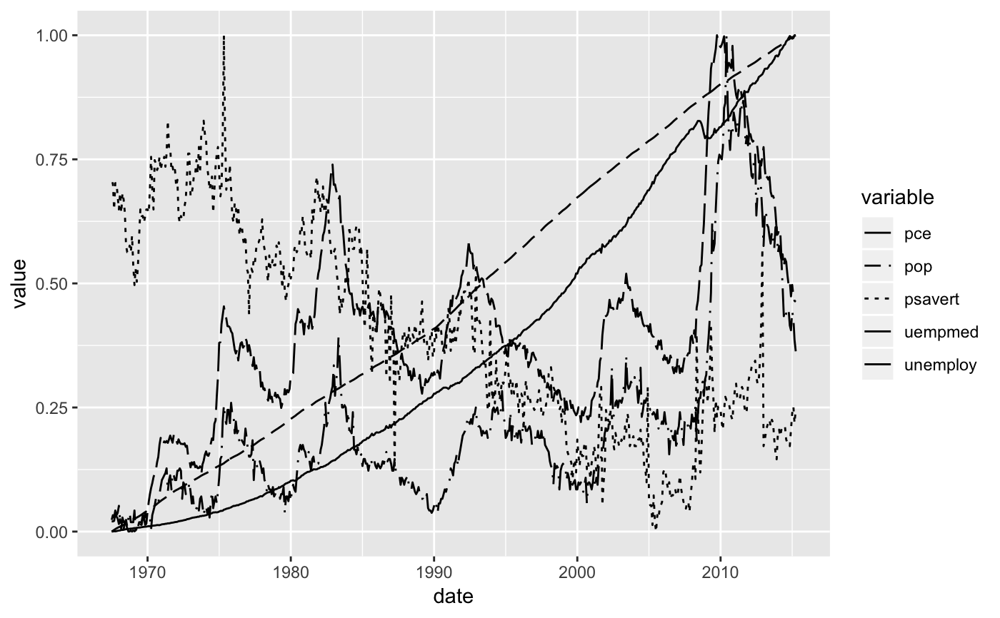

See stata_linetype_pal for details.
scale_linetype_stata(...)
| ... | common discrete scale parameters: |
|---|
Other linetype stata: stata_linetype_pal
require("dplyr")#>#> #>#> #> #>#> #> #>#> #> #>require("tidyr")#>require("ggplot2") rescale01 <- function(x) { (x - min(x)) / diff(range(x)) } gather(economics, variable, value, -date) %>% group_by(variable) %>% mutate(value = rescale01(value)) %>% ggplot(aes(x = date, y = value, linetype = variable)) + geom_line() + scale_linetype_stata()